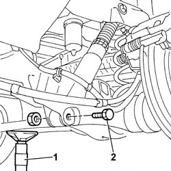
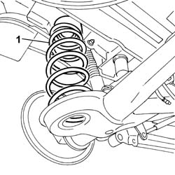

4420A48 REAR SUSPENSION COIL SPRINGS - R.R.
- Path
- Procedures > 44 SUSPENSION AND WHEELS > 4420 REAR SUSPENSION > 4420A REAR DAMPERS AND SPRINGS > 4420A48 REAR SUSPENSION COIL SPRINGS - R.R.
- Kind
- repair procedure (removal / refitting; the operation number is the code)
- Applies to
- all engines; all production periods
- Interactive page
- https://sloeber94.github.io/elrnDB-fUlss/en/#/179007387
Applies to: all engines; all production periods
 Removing
Removing
 Refitting
RefittingPosition the vehicle on a lift.
See
Op. 4450B06 LEFT REAR WHEEL - R.R
See
Op. 4450B08 RIGHT REAR WHEEL - R.R
1. Position a hydraulic lift under the rear axle.
Loosen the bolts fixing the shock absorbers.
2. Use the hydraulic lift and release and remove the lower shock absorber fixing bolts.

Applies to: all engines; all production periods
Lower the hydraulic lift untl the coil springs are completely released.
1. Compress the coil springs and extract them.

Applies to: all engines; all production periods
Refitting
RemovingFit the coil springs in the housings between the rear axle and the bodyshell.
Use the hydraulic lift and fit the lower bolts fixing the shock absorbers.
Value daNm | Fastening | Component | dia | |
|---|---|---|---|---|
. | 9.0 | Bolt | REAR SHOCK ABSORBERS (S.M.) |
Tighten the shock absorber fixing bolts to the recommended torque.
Remove the hydraulic lift.
See
Op. 4450B08 RIGHT REAR WHEEL - R.R
See
Op. 4450B06 LEFT REAR WHEEL - R.R
Remove the vehicle from the lift.